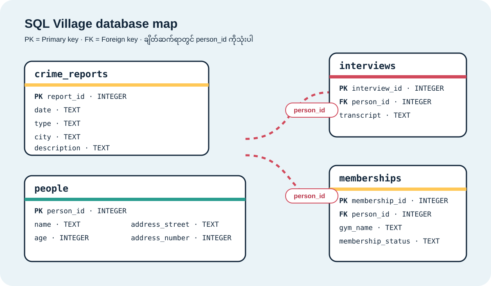

01 · SELECT
Database ထဲက table နာမည်တွေကို ရှာပါ
SELECT name FROM sqlite_master WHERE type = '_____';
Learner worksheet · Case #0310
ရွှေဘဲရုပ် ပျောက်ဆုံးမှု
မြို့တော်ဝန်ရဲ့ ရွှေဘဲရုပ်ကို 2024-03-10 နေ့မှာ SQL Village မှ ခိုးယူသွားပါတယ်။ အမှုအမျိုးအစားက theft ဖြစ်ပါတယ်။ SQL query တွေသုံးပြီး တရားခံကိုရှာပါ။
Table နဲ့ column နာမည်တွေကို query ရေးတဲ့အခါ ဒီပုံကို ပြန်ကြည့်နိုင်ပါတယ်။

Investigation trail
01 · SELECT
SELECT name FROM sqlite_master WHERE type = '_____';
02 · WHERE + AND
SELECT * FROM crime_reports WHERE type = '_____' AND date = '__________' AND city = '___________';
Report ထဲက သက်သေနှစ်ဦးအကြောင်း ရေးမှတ်ပါ။
03 · ORDER BY + LIMIT
SELECT * FROM people WHERE address_street = '_____________' ORDER BY address_number ____ LIMIT _;
person_id / name:
04 · LIKE
SELECT * FROM people WHERE name LIKE '_______' AND address_street = '_________';
person_id / name:
05 · JOIN
SELECT p.name, i.transcript FROM people AS p JOIN interviews AS i ON p._________ = i._________ WHERE p.person_id IN (_, _);
Interview မှ clue နှစ်ခု:
06 · FINAL JOIN
SELECT p.name, p.age, m.gym_name, m.membership_status FROM people AS p JOIN memberships AS m ON p.person_id = m.person_id WHERE m.gym_name = '___________' AND m.membership_status = '____';
တရားခံအမည်:
SELECT · WHERE · AND · ORDER BY · DESC · LIMIT · LIKE · JOIN · IN